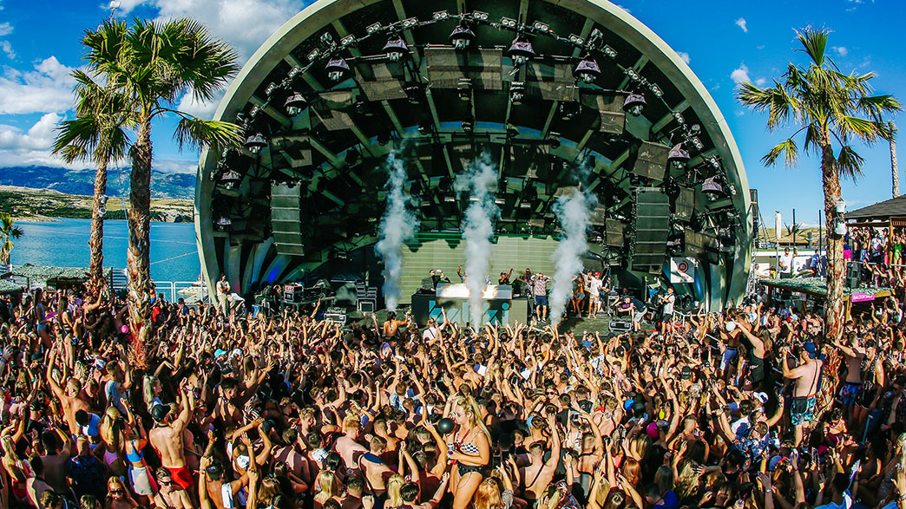
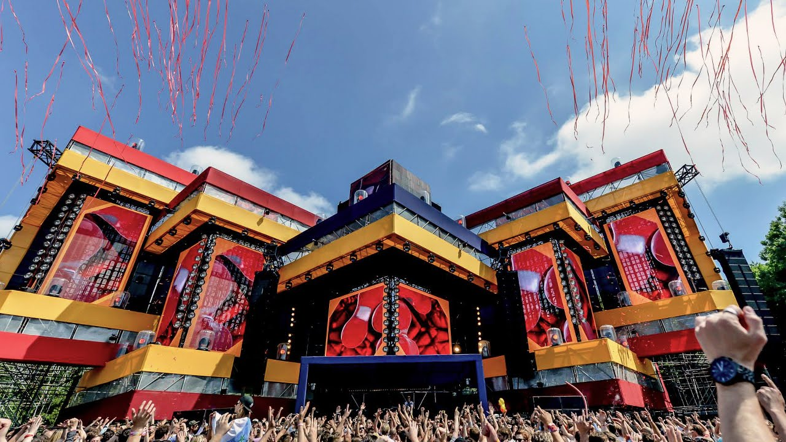
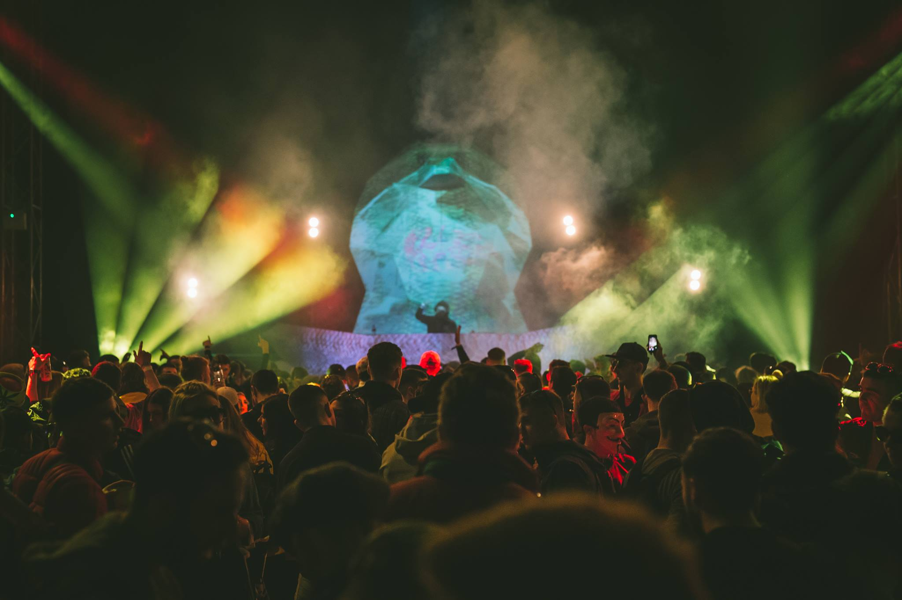

DJ Festivals
Hideout Festival
Zrce Beach, Croatia.

Hideout Festival has be running since 2012 and is one of the biggest DJ festivals in the world and with the biggest festivals comes the biggest DJs.
The likes of MK, Rudimental and Jax Jones as well as a handful of Techno and House artists have performed at Hideout to give a good mix of Pop, EDM, Techno and House.
This festival consists of 6 nightclubs, pool parties, boat parties and a beautiful beach with the hot sunny weather to go with it.
Awakenings Festival
Velsen-Zuid, Netherlands.

Awakenings Festival is a very much a techno and house heavy festival, this festival has been going for almost 20 years.
This is a Dutch based festival with a lot of Dutch DJs like Tiesto and Charlotte de Witte perfoming at this festival.
A lot of people around the world are attracted to this paticular festival, it is an iconic and reliable festival to go to for techno lovers.
Higher Vision festival
Meath, Ireland

Higher Vision is one of Irelands biggest music festivals located in Navan Racecourses, Meath. This festival is also very
Techno based but it does have a touch EDM to go with it like most DJs and festivals there is always a good mix between genres.
A lot of DJs from abroad come over to play at this festival but a percentage of Irish DJs are given the chance to showcase their talent as well.